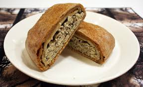
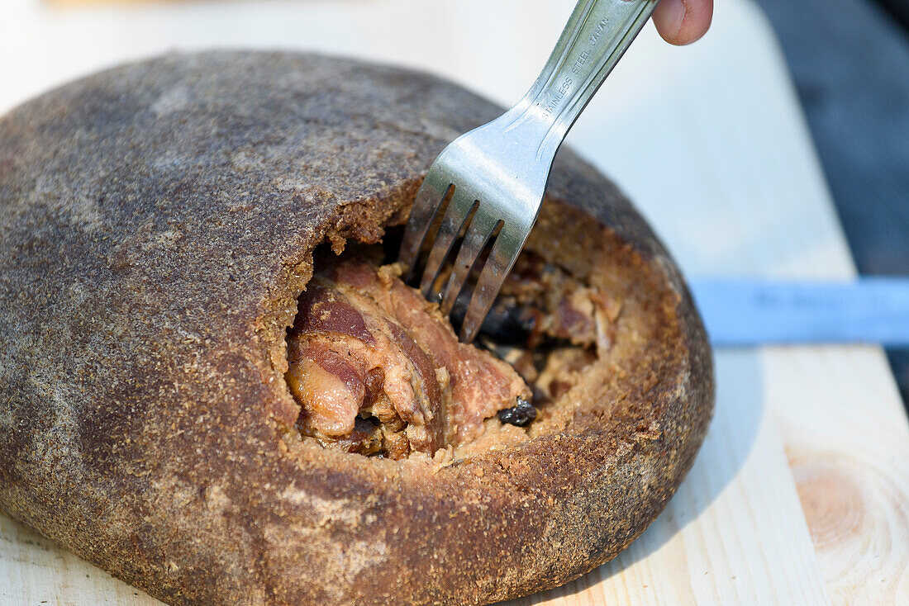
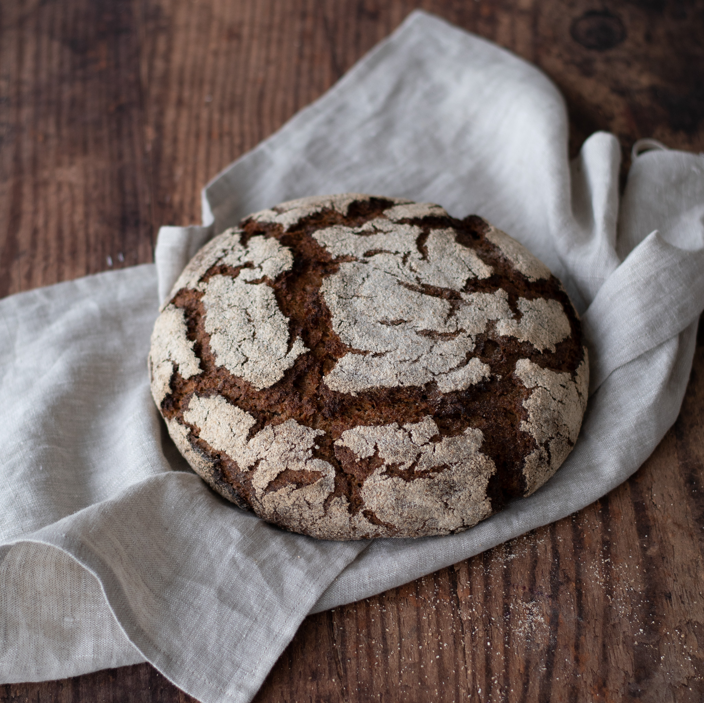
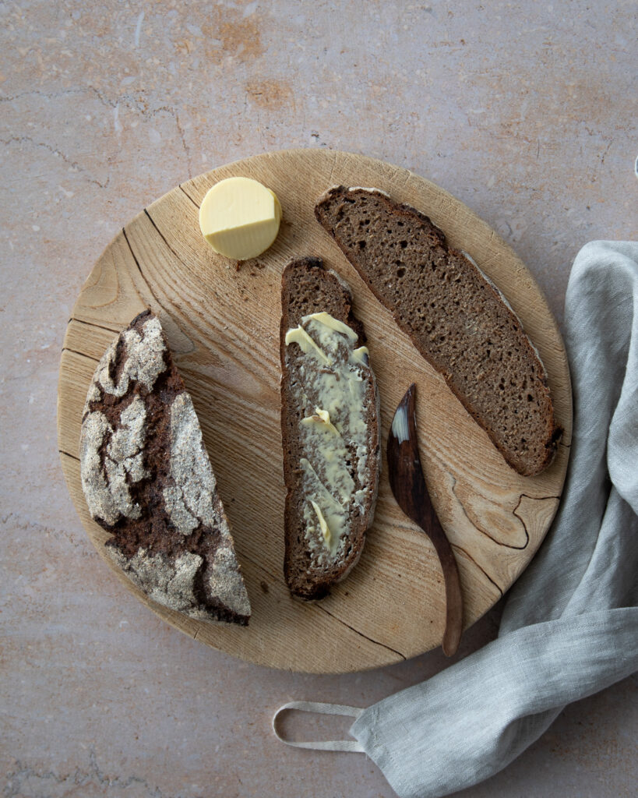
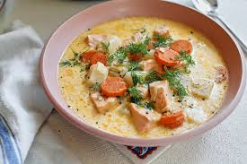
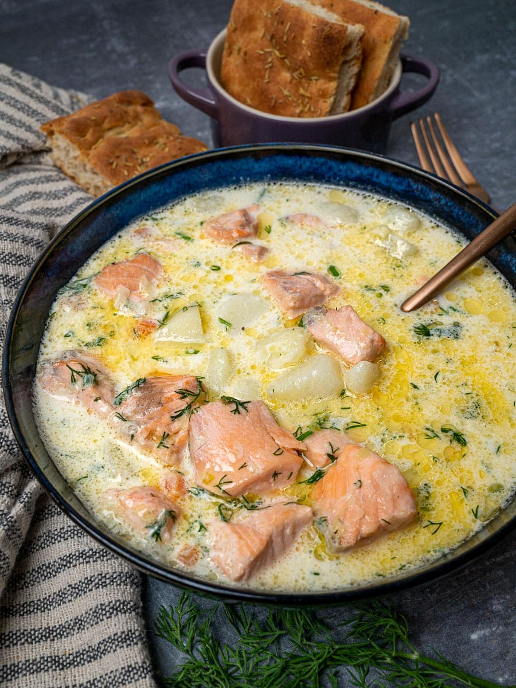
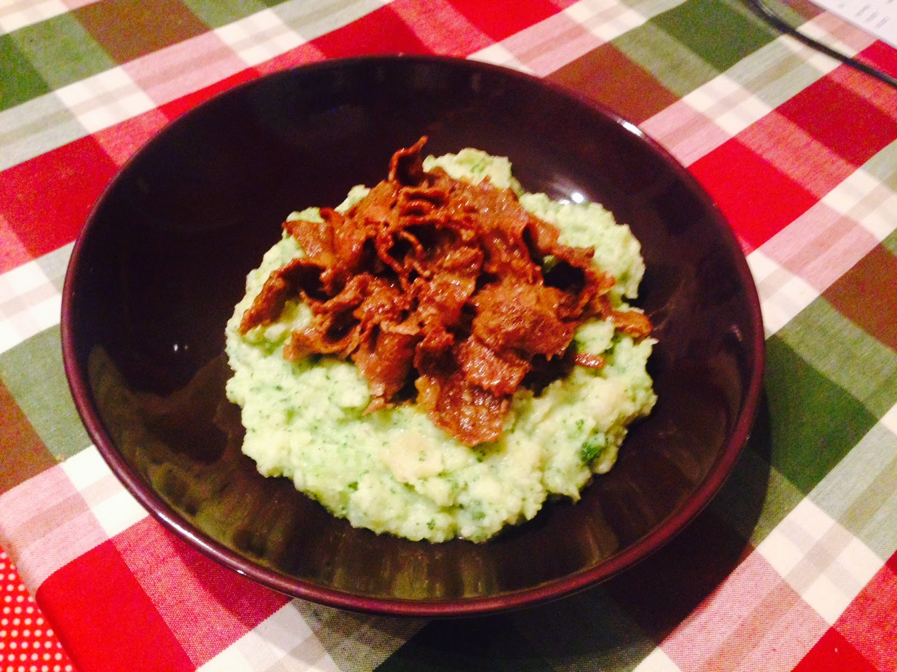
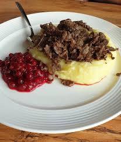
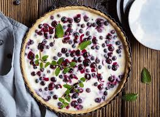
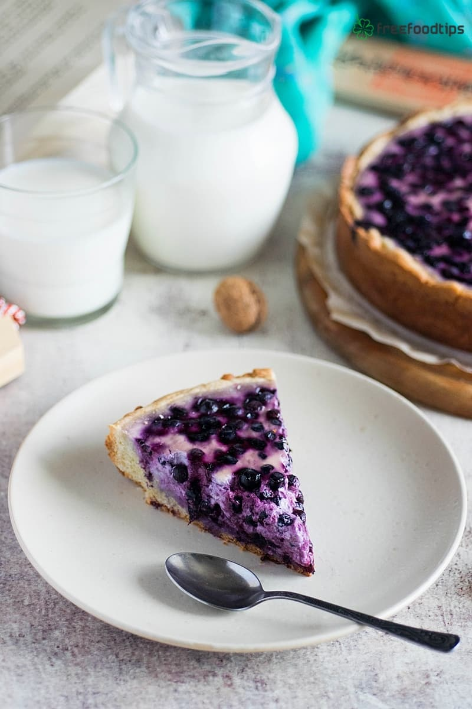

Nestled within the magical Arctic Circle, Santa Claus Village is a place where childhood dreams meet the crisp northern air.
Snow-dusted cottages, twinkling lights, and cheerful elves set the stage for festive wonder all year round. Visitors can meet Santa
himself, send postcards from the official Arctic Circle post office, and witness the ethereal dance of the Northern Lights above.
Every corner brims with enchantment, joy, and the warmth of holiday spirit. More than a destination, Santa Claus Village is an
invitation to step into a real-life winter fairytale—where wonder never grows old.
Kalakukko


Kalakukko isn’t just a pie — it’s a hearty taste of Finnish tradition. Fresh fish and pork are encased in a dense rye crust, baked
slowly to lock in flavors, creating a rustic, comforting meal. Traditionally enjoyed in Karelian kitchens and Finnish homes, every
bite tells a story of local ingredients, centuries of craftsmanship, and the rugged beauty of Finland’s culinary heritage. Simple,
filling, and deeply satisfying, Kalakukko is a true taste of Finland’s heartland.
Ruisleipä (Rye bread)


Ruisleipä isn’t just bread — it’s a cornerstone of Finnish tradition. Dense, hearty, and rich in flavor, this dark rye bread carries
the essence of Finland’s forests and fields. Traditionally baked slowly and enjoyed with butter, cheese, or smoked fish, it’s simple
yet nourishing, a staple at every Finnish table. Every slice tells a story of local grains, generations of craftsmanship, and the
timeless warmth of Finnish home cooking — a true taste of Finland.
Lohikeitto (Salmon soup)


Lohikeitto isn’t just a soup — it’s a taste of Finnish waters. Tender pieces of salmon swim in a creamy, comforting broth with
potatoes, carrots, and leeks, flavored with fresh dill. Light yet satisfying, it’s traditionally enjoyed in homes across Finland,
bringing warmth on chilly days and joy to family tables. Every spoonful carries the essence of local ingredients, centuries of care,
and the timeless charm of Finnish culinary tradition — a true taste of Finland.
Poronkäristys (Sautéed reindeer)


Poronkäristys isn’t just a dish — it’s a hearty taste of Lapland. Tender reindeer meat is slowly sautéed with onions and butter,
served traditionally with mashed potatoes and lingonberries. Rich, flavorful, and comforting, it brings warmth to the table on cold
Arctic nights. Every bite tells a story of local ingredients, generations of care, and the rugged beauty of Finnish Lapland — a true
taste of the North.
Mustikkapiirakka (Blueberry pie)


Mustikkapiirakka isn’t just a pie — it’s a sweet taste of Finnish summer. Juicy, wild blueberries are nestled in a tender, buttery
crust, baked to golden perfection and often served with a dollop of cream. Light, fruity, and comforting, it’s traditionally enjoyed
during warm days and family gatherings, celebrating the season’s bounty. Every bite carries the essence of Finnish forests, local
craftsmanship, and the timeless joy of sharing homemade treats — a true taste of Finland.